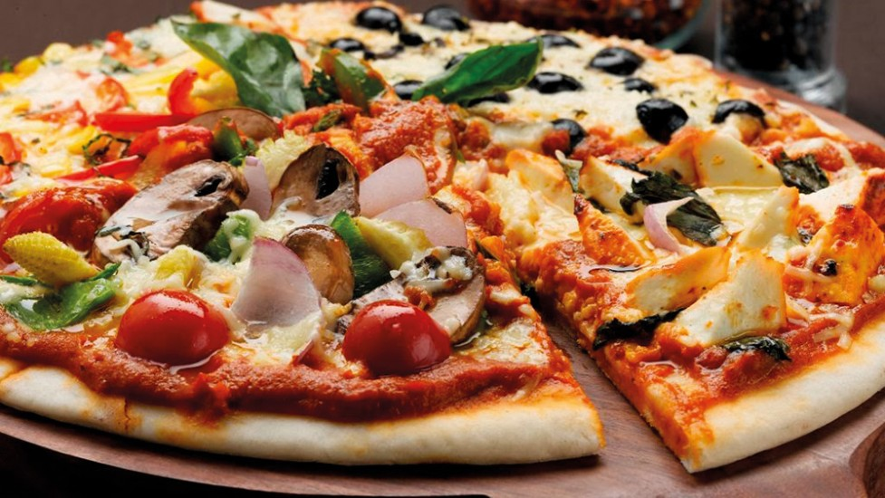

In addition to food and people there are plenty of other things that i like. Some of these things include sports activities such as swimming and playing basket ball. There is also coding. Coding is fun and engaging and as such it is one of my favourite things to do.
Check out Pizza place. It has the best pizzas in town!
Here is a link to a delicious roast goat recipe favorite meal.